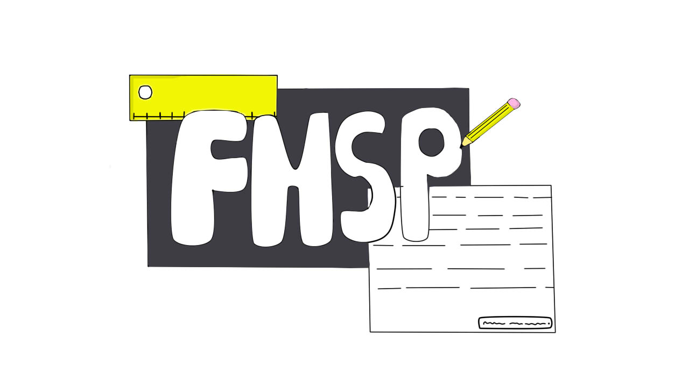
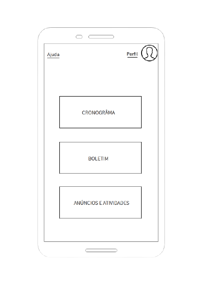

FMSP-App
Uma nova forma de organizar seus estudos!

O aplicativo FMSP tem o principal objetivo de ajudar os estudan
tes da Escola Frederico Marcicano a se organziarem com o auxi
lio de cronogrâma escolar e informações sobre o seu ano letivo
Esse projeto é adiministrado pela EE.Frederico Marcicano e sua
equipe de TI.

Veja o vídeo abaixo para aprender a utilizar o App-